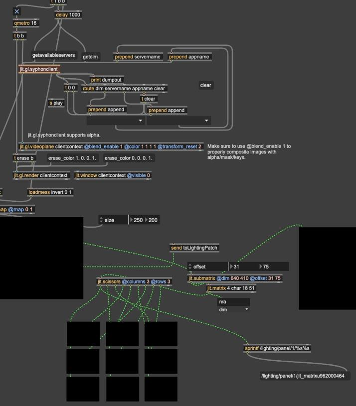
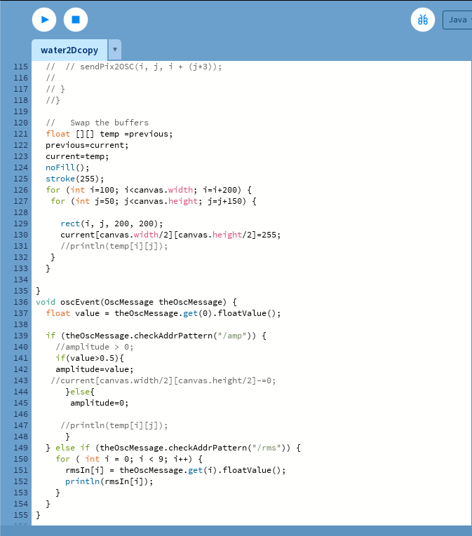
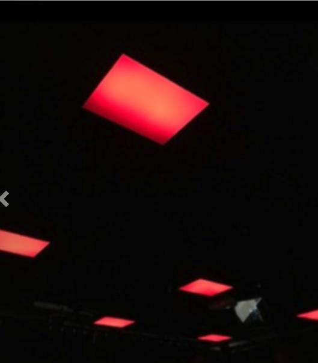
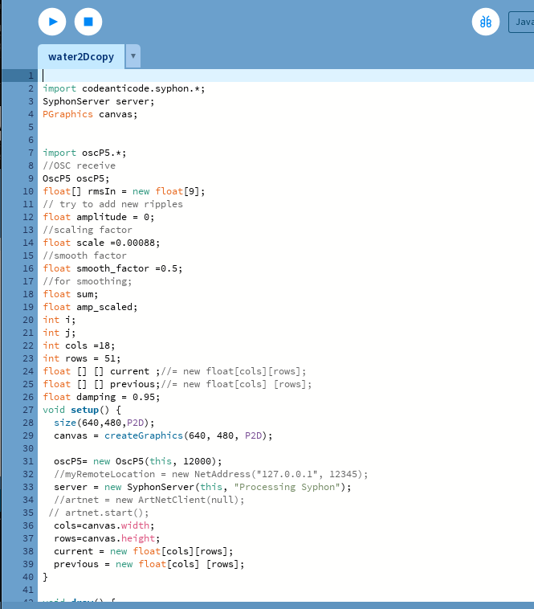
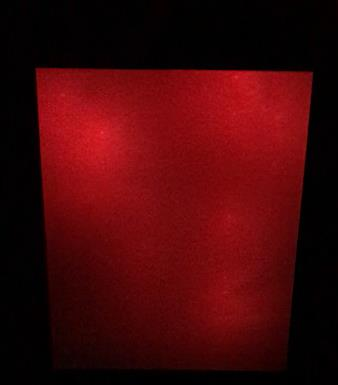

Networked light installation · 2019
Ripples
01 / Project
A generative water simulation propagates outward through nine suspended LED panels as expanding waves of red light.
Ripples is a networked light installation developed as my independent contribution to the Vertical Studio Lab showcase in partnership with Dispersion Lab at York University.
The work translates the movement and propagation of water into a distributed lighting environment composed of nine suspended LED panels, each containing 100 individually addressable LEDs.
- Role
- Processing simulation and Max/MSP networking
- System
- Nine panels, 900 LEDs, generative water simulation
- Support
- LED panels provided by Dispersion Lab





Propagation as light
A disturbance begins at the centre and travels outward through the physical system.
Inspired by Hugo Elias’s water simulation and cellular-system principles, the system maps pixels directly to LEDs.
A Processing simulation generates disturbances while Max/MSP networks the image with the lighting system, allowing waves to move from the central panel across the surrounding eight panels.